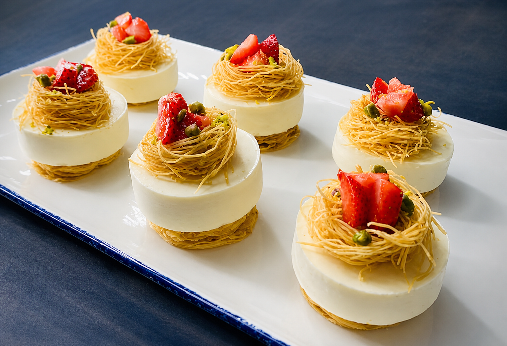
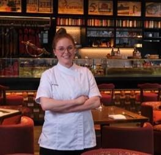
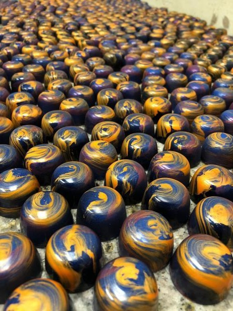
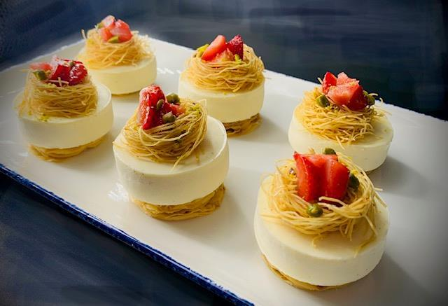
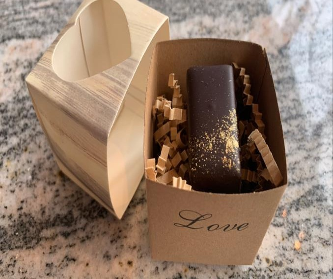
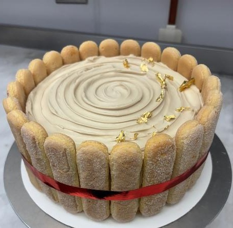
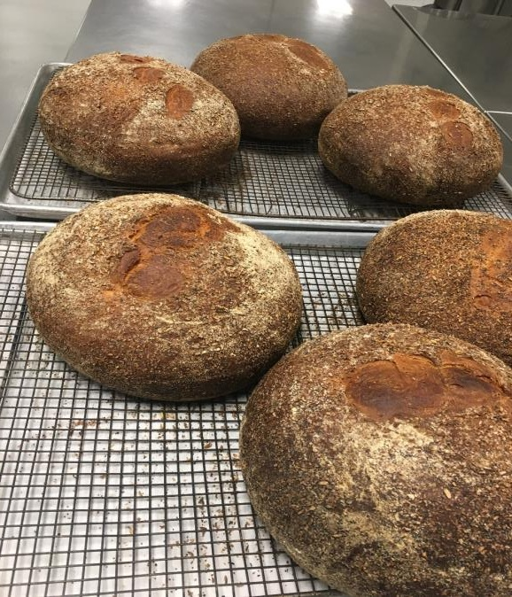
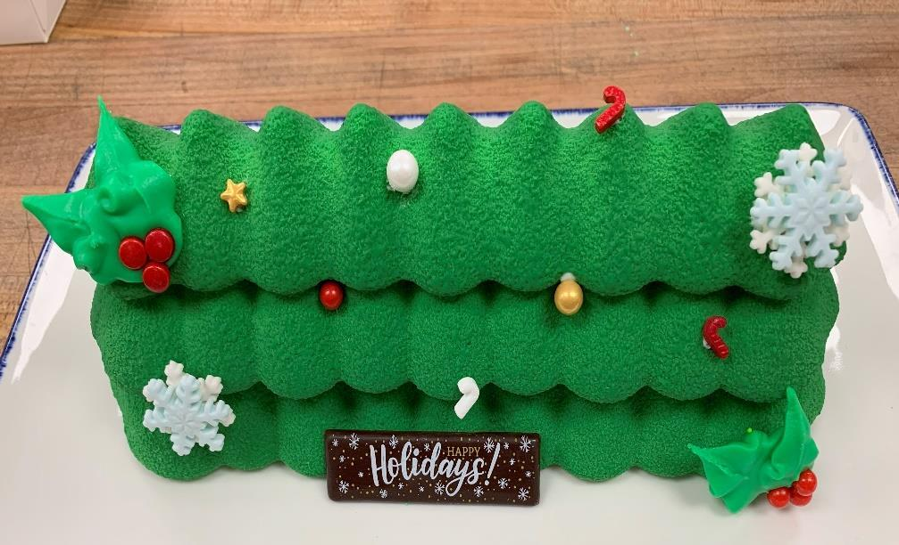

Menu Development & R&D
Translating concept, flavor, texture, and seasonality into recipes built for service.
Pastry Chef · Dessert R&D
Creating memorable dessert experiences through precision, imagination, and warm hospitality.
View selected work↘

Brooklyn beginnings, a global kitchen
01
More than a decade across fine dining, luxury hotels, chocolate, and bakery environments.
02Selected work

Chocolate · Confectionery

Contemporary plated pastry

Retail development

Classic technique

Bread production

Seasonal showpiece
03
Dessert is not simply the final course. It is the closing line of an experience guests carry with them.
Jamie Lee Dunne
Pastry Chef
04Expertise
Translating concept, flavor, texture, and seasonality into recipes built for service.
Quality-led execution across plated desserts, amenities, banquets, and high-volume production.
Hands-on experience with bonbons, molded pieces, bars, small confections, and retail production.
Guiding production schedules, inventory, training, kitchen workflow, and new-program launches.
05Experience
2024–2025
IRCA Group
B2B product demonstrations, tasting programs, and dessert consultation.
2024–2025
FIYA Restaurant
Developed café and dinner desserts.
2024–2025
Sorelle Italian
Built the dessert program, recipes, schedules, and workflow.
2023–2024
Pella Signature
Led menu R&D, production planning, purchasing, inventory, and team development.
2021–2022
Bazaar Meat by José Andrés
Directed pastry preparation, service, menu research, ordering, and team training.
2020–2021
Nobu Hotel Chicago
High-volume restaurant and rooftop service, hotel amenities, chocolate, and training.
2014–2020
Chicago · Buffalo · Florida
Progressive roles across restaurants, hotels, and chocolate production.
Notable kitchens & groups
06
2012–2014
2011–2012
Languages